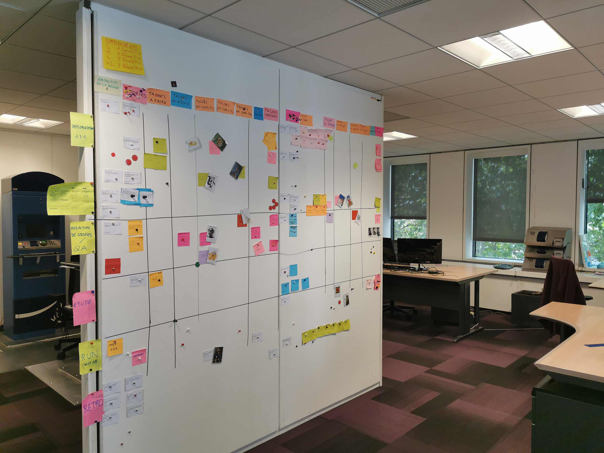
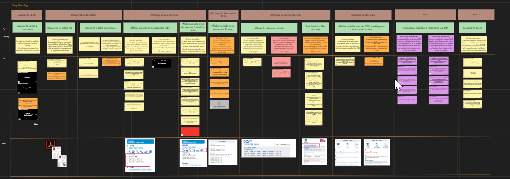

Transformer l’expérience utilisateur
grâce au User Story Mapping
-

Anne-Laure JEAN Product Manager
chez e.Voyageurs SNCF -
Mohamed MOUSSA Coach Agile
chez e.Voyageurs SNCF
Anne-Laure JEAN
Product Manager
chez e.Voyageurs SNCF
Mohamed MOUSSA
Coach Agile
chez e.Voyageurs SNCF
Grande entreprise ferroviaire publique française, la SNCF emploie 272 000 personnes et réalise un chiffre d’affaires d’environ 35 milliards d’euros par an. Au cours d’une journée type, la société gère 15 000 trains et transporte près de 10 millions de passagers, partout en France : une responsabilité immense !
Au sein du groupe, la filiale e.Voyageurs SNCF a la lourde charge du système de ticketing et de réservation en ligne (Oui.sncf) qui traite 110 millions de tickets par an, soit l’équivalent de près de 5 milliards d’euros de revenus.
Plus particulièrement, Anne-Laure Jean supervise le processus de product management auprès de 2 équipes de réalisation Agiles, composées, au total, de 17 développeurs et plusieurs QA testers et product owners. Celles-ci développent des produits backend complexes. Mohamed Moussa est Scrum Master dans l’une de ces équipes et, en parallèle, est responsable de l’évangélisation de la philosophie Agile et des meilleures pratiques de conception et de gestion de projet au sein de la Digital Factory.
Lorsque l’Agilité fut introduite au sein de la Factory, des product owners furent nommés dans les équipes quasiment du jour au lendemain, sans que ceux-ci ne puissent pour autant s’appuyer sur une quelconque expérience passée dans ce rôle. Même si certains d’entre eux eurent de bonnes intuitions pour nourrir la roadmap produit, la plupart manquaient de recul pour identifier les fonctionnalités et défis à venir de façon relativement exhaustive. Cette situation créa rapidement une certaine frustration chez les ingénieurs, contraints d’opter pour des choix d’architecture technique structurants sans pouvoir réellement anticiper toutes les conséquences.
“N’oublions-nous pas un composant essentiel du produit ?” était la question qui taraudait Anne-Laure à ce moment-là. Avec tant d’information à prendre en compte auprès des différentes parties prenantes, elle ressentit la nécessité de trouver une méthode offrant davantage de certitude pour imaginer et concevoir les produits dans leur globalité.
Du point de vue d’Anne-Laure, il était devenu évident que “les product owners avaient besoin d’un outil qui puisse les aider à acquérir une vision plus globale des enjeux afin de déterminer plus facilement les user stories absolument nécessaires au bon fonctionnement du produit à moyen terme”. En encourageant les product owners à cartographier leurs produits sur un mur sous la forme d’un User Story Mapping, ils pourraient rapidement apporter à leur équipe une vision plus large et lointaine des évolutions futures.
A cette époque, les développeurs et testeurs regrettaient, auprès de Mohamed, le fait que, “au cours des grooming sessions, ils n’obtenaient qu’une vision court terme, le plus souvent à l’échelle du sprint, des user stories qu’ils devaient implémenter, mais pas plus loin.” C’est à ce moment-là que Mohamed décida d’encourager tous les product owners à exploiter la puissance du User Story Mapping.
Une fois introduit au sein des équipes de développement, pour Mohamed, “il est devenu clair que le User Story Mapping était l’outil idéal pour aider les product owners à concevoir leurs produits de façon plus détaillée et exhaustive et, par conséquent, permettre aux ingénieurs de mieux organiser leur travail et anticiper les principaux écueils.”
Mohamed apprécie le User Story Mapping depuis de nombreuses années : “c’est une façon très efficace d’encourager les équipes à travailler sur une représentation commune, créant ainsi une unique source de vérité qui amène naturellement tous les collaborateurs et parties prenantes impliqués à parler le même langage. L’outil permet aux product owners d’acquérir une vision plus profonde et exhaustive de leurs produits et, donc, de découper et hiérarchiser les user stories de façon optimale.
Dès que les produits furent cartographiés avec leur axe narratif propre, Anne-Laure et Mohamed se sont rendus compte qu’ils avaient besoin d’adapter le User Story Mapping traditionnel dans le but de séparer plus explicitement l’espace des problèmes (qui concerne les business owners) de celui des solutions (dont les product owners ont la responsabilité).
En conséquence, ils ont mis en place un nouveau processus dans le cadre duquel, d’un côté, les business owners sont régulièrement amenés à présenter leurs besoins sous la forme de User Story Maps. De l’autre côté, les product owners, avec l’aide de leur équipe de développement, proposent les solutions qu’ils ont envisagées, l’objectif étant de créer une boucle de feedback collaborative et vertueuse entre toutes les parties prenantes au projet.
Dans son rôle de Product Manager, Anne-Laure accompagne les business owners dans leur processus d’idéation et recueille leurs attentes sous forme de User Story Maps. Même si cette nouvelle façon de fonctionner n’en est qu’à ses débuts, elle espère que le “User Story Mapping deviendra progressivement l’outil de référence dans l’ensemble du processus de product management.”
“Grâce à l’implication des product owners et le coaching d’Anne-Laure, le User Story Mapping a permis de faire collaborer les équipes de développement avec les autres composantes du groupe de façon harmonieuse et très efficace”, se réjouit Mohamed.
Alors, quelles sont les prochaines étapes désormais ? “Nous voulons standardiser le processus de project management, au niveau des epics, entre les business owners et les équipes de développement, afin de permettre aux parties prenantes de suivre l’avancement des projets de façon totalement autonome”, explique Mohamed.
Plus précisément, en tirant profit de l’intégration entre Draft et Jira, Mohamed souhaite “homogénéiser le langage utiliser du management aux QA testers et synchroniser les cartes d’epic Draft avec celles de Jira dans le but de créer une véritable continuité allant des décideurs aux développeurs, et ce, de bout en bout du processus de gestion de projet.”